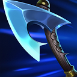

Компоненты II
Топор Теплолюбивых
Hearthbound Axe
1200 золотаИз чего собирается

Характеристики
- +20 силы атаки
- +15% скорости атаки
Описание и эффект
Компонент среднего уровня, повышающий скорость атаки и силы атаки.
ПРИМЕНЕНИЕ
Кому подходит
Промежуточная покупка, которая подходит чемпионам с физическим уроном.
Когда выбирать
Покупай как часть запланированного большого предмета. При возвращении на базу сравни доступное золото и нужные прямо сейчас характеристики.